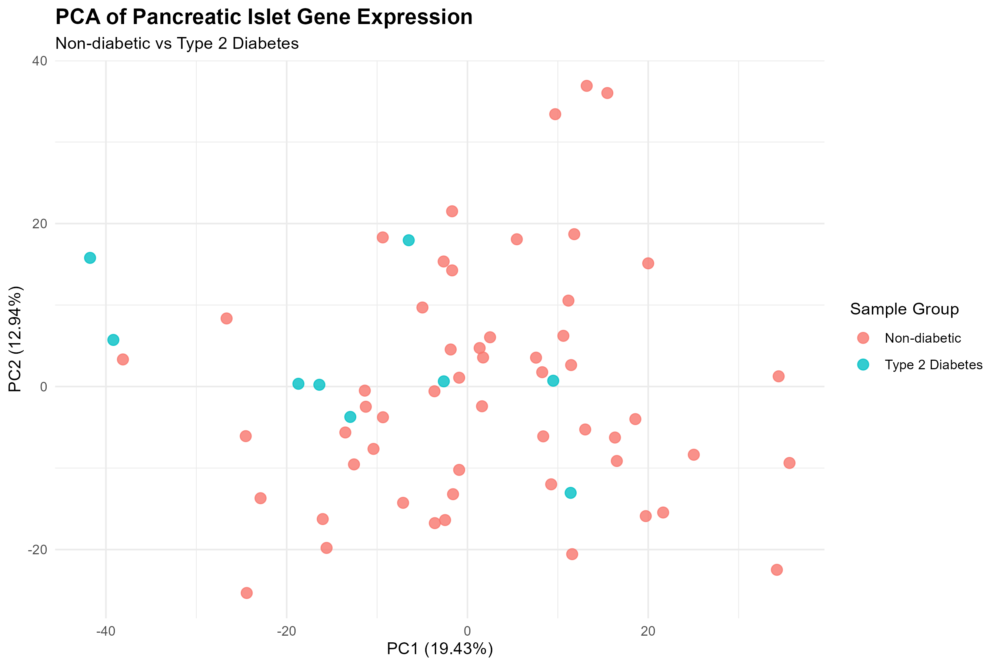
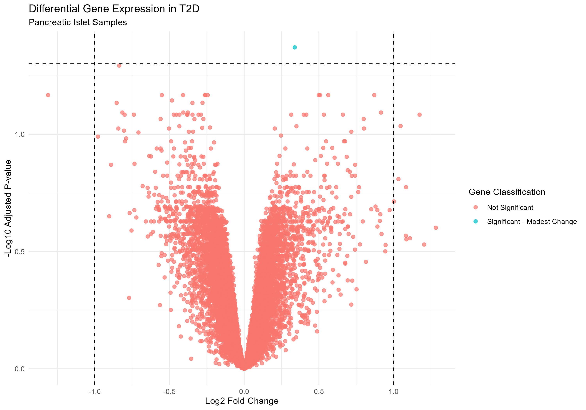
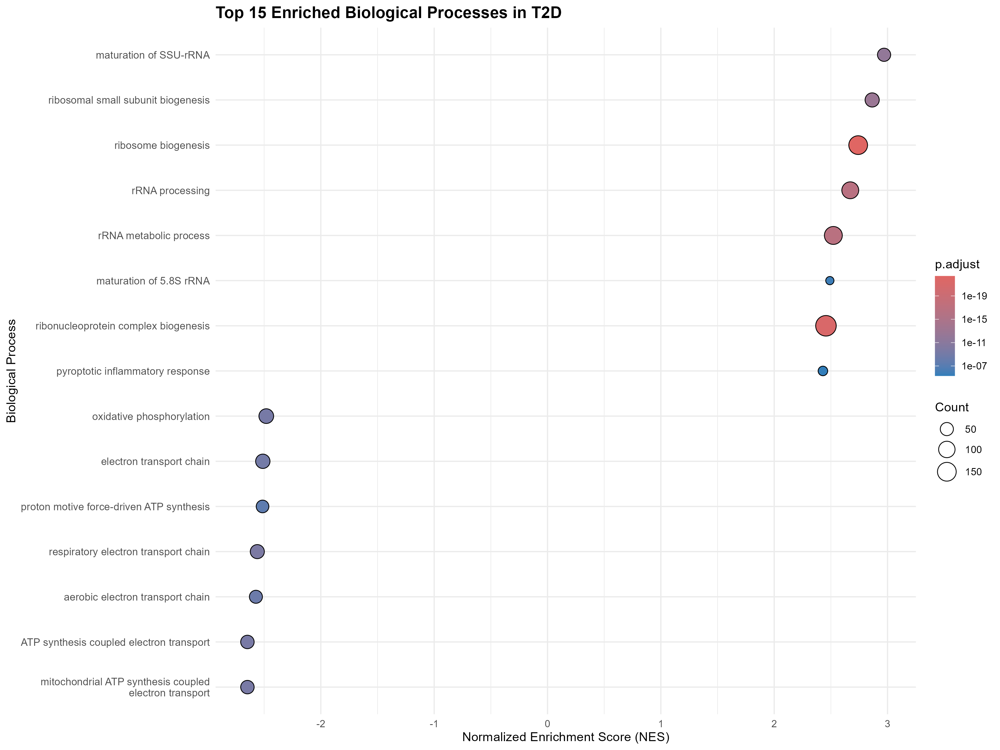
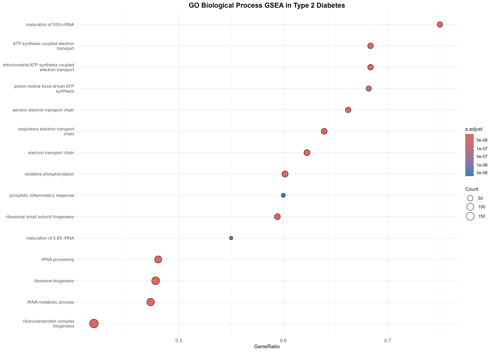
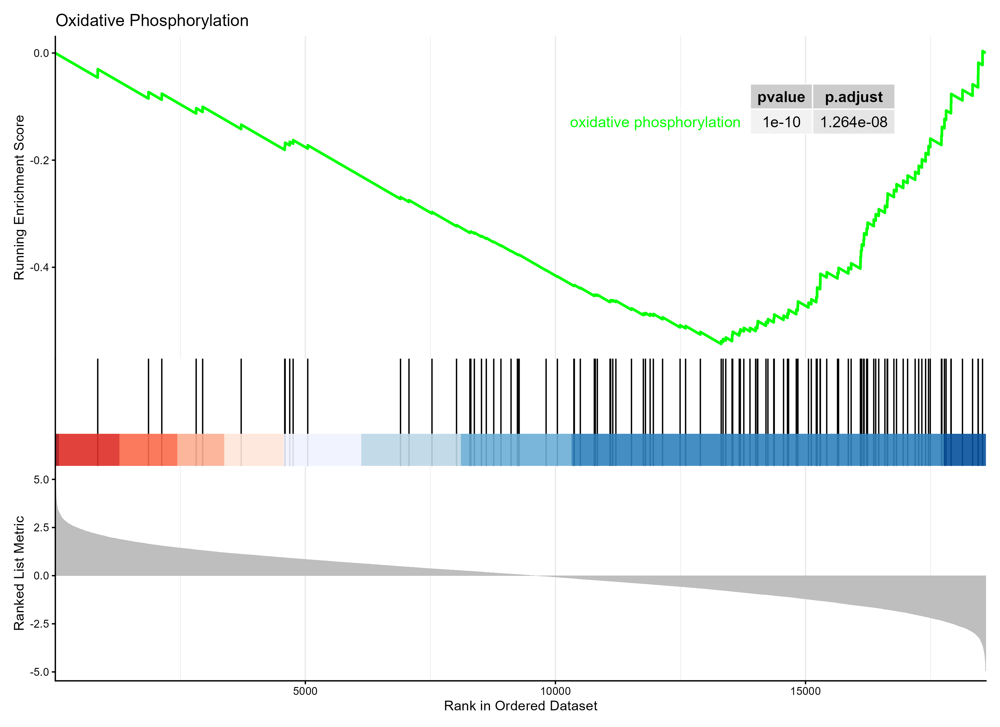
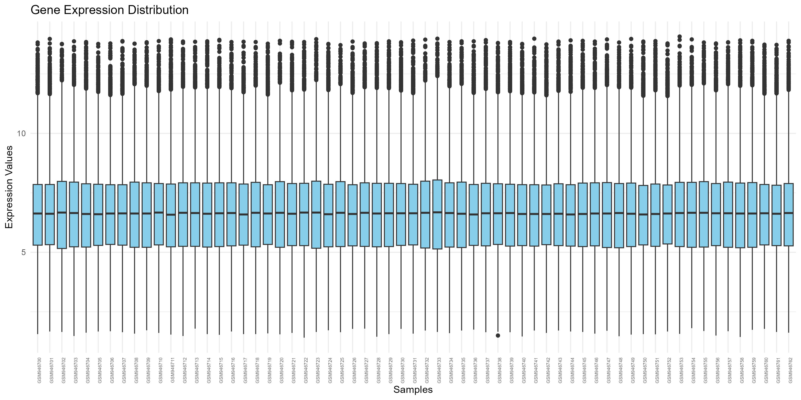

Dataset acquisition
Retrieve GSE38642 expression profiles and donor metadata from NCBI GEO.
GEOquery · ExpressionSetDifferential gene expression and functional enrichment analysis of human pancreatic islet gene expression data.
Type 2 Diabetes (T2D) is a metabolic condition involving impaired blood-glucose regulation. Pancreatic islets contain insulin-producing cells and are central to glucose homeostasis.
This project uses a public gene-expression dataset to compare pancreatic islet samples from donors with T2D and non-diabetic donors. Statistical analysis and pathway enrichment are used to explore patterns that may be associated with the disease.
A reproducible R-based workflow connecting sample-level exploration with gene-level statistics and biological pathways.
Retrieve GSE38642 expression profiles and donor metadata from NCBI GEO.
GEOquery · ExpressionSetInspect matrix dimensions, sample labels, missing values and expression distributions.
R · tidyverse · ggplot2Use principal component analysis to explore variation across samples.
prcomp · PCAFit a limma model for T2D versus control and adjust p-values for multiple testing.
limma · empirical BayesConnect probe identifiers to platform and human gene annotation resources.
GPL6244 · AnnotationDbiRank genes by moderated t-statistic and test Gene Ontology Biological Process sets.
clusterProfiler · org.Hs.eg.dbThe values below are loaded from the result tables included with this project.
One probe passed the Benjamini–Hochberg adjusted p-value threshold across 18,808 tested probes. Statistical significance does not by itself establish biological importance.
Download full differential expression table ↓Probe-level result from the supplied limma output. Confirm gene-level annotation before assigning a gene name or biological interpretation.
These figures are displayed directly on this page, not just provided as external links.






Bars represent normalized enrichment score (NES) relative to the highest NES among the displayed pathways. Positive NES indicates enrichment toward the top of the ranked gene list.
The following figures are embedded directly in this website using the project's saved PNG files.
The website is a static presentation of the R analysis. R scripts must be run in R/RStudio; GitHub Pages does not execute R code.
Public pancreatic islet gene expression dataset.
MICROARRAY PLATFORM ↗Affymetrix Human Gene 1.0 ST platform annotation.
ANALYSIS CODE ↗Inspect the scripts used for preprocessing, statistics and enrichment.
DOWNLOAD ↓Download the GO Biological Process enrichment output.
This is an exploratory analysis of an observational public dataset. The small T2D group (9 samples) and the probe-to-gene annotation process should be considered when interpreting results. Enriched pathways are hypotheses for further investigation, not proof of causation or clinical conclusions.